library(tidyverse)
library(here)
library(knitr)
library(mvtnorm)
library(gapminder)
library(GGally)
library(pheatmap)
library(purrr)
#아래 3 문장은 한글을 포함한 ggplot 그림이 포함된 HTML, PDF로 만드는 경우 사용
library(showtext)
#font_add_google("Nanum Pen Script", "gl")
font_add_google(name = "Noto Sans KR", family = "noto")
showtext_auto()9 군집 분석
군집 분석(clustering)은 다변량 관측값들 사이의 유사성(또는 거리)을 기반으로 관측값들을 그룹화하는 방법이다. 군집분석은 다음과 같은 특징을 가진다.
- 군집의 개수나 각 대상의 소속 집단에 대해 사전 가정을 두지 않는다.
- 각 군집의 형태나 구조에 대한 가정도 필요하지 않다.
- 비지도학습(unsupervised learning) 방법으로, 교사의 역활이 없는 상태에서 스스로 학습한다.
- 여러 변수들의 값을 이용하여 대상들을 유사한 특성을 가진 집단으로 분류하는 알고리즘을 구성한다.
- 유사한 특성을 가진 개체들은 동일한 군집에 포함된다.
- 개체 간의 유사성 또는 차이를 판단하기 위해 거리(distance) 또는 유사도(similarity)의 개념을 사용한다.
군집분석은 계층적 군집분석(hierarchical clustering)과 비계층적 군집분석(non-hierarchical clustering)으로 나뉘며 두 방법에 대한 차이는 다음과 같다.
계층적 군집분석
- 군집 간의 포함 관계를 단계적으로 형성해 나가는 방법이다.
- 처음에는 각 개체를 하나의 군집으로 두고, 가까운 군집끼리 차례로 병합(병합적 방법)하거나, 반대로 전체를 하나의 군집으로 두고 점차 분할(분할적 방법)하는 방식으로 진행된다.
- 사전에 군집의 개수를 정할 필요가 없지만, 해석 단계에서 적절한 군집 수를 선택해야 한다.
비계층적 군집분석
- 군집의 개수를 미리 정해두고, 개체들을 그 개수만큼의 군집에 나누는 방법이다.
- 대표적인 예로 K-평균(K-means) 군집분석이 있다.
- 초기 군집 중심을 정한 뒤, 개체들을 가장 가까운 중심에 배정하고, 군집 중심을 다시 계산하는 과정을 반복(iteration)하면서 군집을 안정화시킨다.
- 대규모 자료에 적합하지만, 초기 설정(군집 수, 중심점)에 따라 결과가 달라질 수 있다.
먼저 군집 분석에 사용할 수 있는 다양한 거리의 정의와 성질에 대해 알아보고, 이후에 계층적 군집 분석과 비계층적 군집 분석 방법을 살펴본다.
9.1 거리의 정의와 성질
9.1.1 연속형 변수
우리는 세상을 수많은 요소를 통해 관찰한다. 사람을 구분할 때 외모, 언어, 문화, 지리적 배경 같은 요인이 서로 다른 차이를 만들어낸다. 한국인과 일본인은 서로 가까워 보이지만, 아프리카인과는 그 차이가 훨씬 크다고 느낀다. 이런 차이의 크기를 수학적으로 정의한 것이 바로 거리(distance)다. 이번 절에서는 다변량 변수를 다루는 경우 개별 관측값들 사이의 거리를 어떻게 정의할 수 있는지 다양한 거리의 정의와 성질을 알아본다.
먼저 p-차원 확률 벡터 \(\pmb X\) 를 생각하고 \(n\) 개의 관측벡터가 있다고 가정하자.
\[ \pmb X_1, \pmb X_2, \ldots, \pmb X_n \] 여기서 \(\pmb X_i^t = (X_{i1}, X_{i2}, \dots, X_{ip})\) 이다.
유클리디안 거리 (Euclidean distance)는 우리가 일상에서 사용하는 거리 개념과 같다. \(p\)-차원 공간에서 두 관측 벡터 \(\pmb X_1\) 과 \(\pmb X_2\) 사이의 유클리디안 거리는 다음과 같이 정의된다.
\[ d(\pmb X_1, \pmb X_2) = \sqrt{ (\pmb X_1 - \pmb X_2)^t (\pmb X_1 - \pmb X_2) } = \sqrt{\sum_{k=1}^p (X_{1k} - X_{2k})^2} \]
유클리디안 거리는 실수 공간상의 거리이므로 다변량 변수들이 연속인 경우에 적용되는 거리이다.
유클리드 거리는 확률 변수들 간의 상관관계나 분산의 차이(불확실성의 차이)를 고려하지 않는다. 예를 들어, 두 변수들이 서로 다른 분산를 가진다면, 두 변수의 관측값을 이용한 거리가 같더라도 확률적 불확실성이 다를 수 있다.
예를 들어 두 확률 변수의 분산이 각각 1 과 10 이라고 한다면 두 개의 관측값에 의한 계산된 유클리디안 거리, 즉 대수적인 차이가 같더라고 차이에에 대한 확률적인 불확실성은 다르다.
유클리디안 거리를 확률적으로 보완하기 위해 통계학에서는 통계적 거리(statistical distance) 또는 마할라노비스 거리(Mahalanobis distance) 개념을 도입한다. 통계적 거리는 변수들 간의 상관관계와 분산을 고려하여 거리를 계산한다. 만약 확률벡터 \(\pmb X\) 의 공분산 행렬을 \(\pmb V\) 라고 하면 두 관측 벡터 \(\pmb X_1\) 과 \(\pmb X_2\) 사이의 통계적 거리는 다음과 같이 정의된다.
\[ d_M(\pmb X_1, \pmb X_2) = \sqrt{ (\pmb X_1 - \pmb X_2)^t \pmb V^{-1} (\pmb X_1 - \pmb X_2) } \]
표준화
유클리디안 거리는 측정값의 단위(scale)에 따라서 달라진다. 예를 들어, 어떤 사람의 키(cm)와 치아의 길이(mm)를 측정했다고 하자. 키의 변동폭은 20~30mm, 치아 길이의 변동폭은 1~2mm 정도다. 이때 단순히 두 변수의 차이를 이용하면, 거리는 대부분 키의 차이에 의해 좌우된다. 그래서 모든 변수가 거리 계산에 비슷한 영향을 주도록 하기 위해서 표준화(standardization)가 필요하다. 표준화는 각 변수에서 평군값을 뺴고 그 표준편차로 나누는 작업이며 표준화된 변수의 평균은 0 이고 분산은 1 이다.
\[ Z_{ik} = \frac{X_{ik} - \bar{X}_k}{s_k} \]
여기서 \(\bar X_k\) 는 \(k\)-번쨰 변수의 표본 평균이고 \(s_k\) 는 표본 표준편차이다. 표준화된 변수를 이용하여 유클리디안 거리를 계산하면, 각 변수가 거리 계산에 동일한 영향을 미치게 된다.
거리의 기본 성질은 다음과 같다.
- 비음수성(Non-negativity): 모든 관측값 쌍에 대하여 거리는 0 이상이다.
\[ d(\pmb X_i, \pmb X_j) \geq 0 \]
- 대칭성(Symmetry): 두 관측값 사이의 거리는 순서에 상관없이 같다.
\[ d(\pmb X_i, \pmb X_j) = d(\pmb X_j, \pmb X_i) \]
- 삼각 부등식(Triangle inequality): 세 관측값 \(\pmb X_i\), \(\pmb X_j\), \(\pmb X_k\)에 대하여 다음을 만족한다.
\[ d(\pmb X_i, \pmb X_k) \leq d(\pmb X_i, \pmb X_j) + d(\pmb X_j, \pmb X_k) \]
9.1.2 이항 변수
이항 변수(binary variable)는 두 가지 값(예: 0과 1 또느 성걸과 실패)만을 가질 수 있는 변수이다. 예를 들어, 성별(남성/여성), 흡연 여부(흡연자/비흡연자) 등이 이항 변수에 해당한다. 이항 변수로 구성된 다변량 데이터에서 거리 계산을 할 때는 앞에서 살펴보 유클리디안 거리와 다른 거리의 개념을 적용할 필요가 있다.
에를 들어 마케팅 조사에서 고객 성향을 분석하기 위하여 10개의 항목에 대한 선호도 조사를 한다고 하자. 각 항목을 좋아하면 1, 좋아하지 않으면 0 이라고 하자. 아래 표에 2 명에 대한 조사결과가 있다면 10 개의 선호도 항목에 대한 자료로 두 사람이 얼마나 가까운지 어떻게 거리를 계산할 수 있을까? 참고로 아래와 같은 자료의 형식은 출현–부재 자료 (present-absence data)라고 부른다.
| 항목 | 1 | 2 | 3 | 4 | 5 | 6 | 7 | 8 | 9 | 10 |
|---|---|---|---|---|---|---|---|---|---|---|
| 사람 1 (\(\pmb X_1\)) | 0 | 0 | 1 | 1 | 1 | 0 | 1 | 1 | 1 | 0 |
| 사람 2 (\(\pmb X_2\)) | 1 | 1 | 1 | 1 | 0 | 0 | 0 | 0 | 1 | 1 |
위의 선호도 조사에서 얻은 자료를 다음과 같은 교차표로 정리할 수 있다.
| 사람 1 -좋아함 | 사람 1 싫어함 | 합계 | |
|---|---|---|---|
| 사람 2 좋아함 | a (3) | b (3) | a+b (6) |
| 사람 2 싫어함 | c (3) | d (1) | c+d (4) |
| 합계 | a+c (6) | b+d (4) | n (10) |
여기서,
- \(a\): 두 사람 모두 좋아하는 항목의 수
- \(b\): 사람 2는 좋아하지만 사람 1은 싫어하는 항목의 수
- \(c\): 사람 1은 좋아하지만 사람 2는 싫어하는 항목의 수
- \(d\): 두 사람 모두 싫어하는 항목의 수
- \(n\): 전체 항목의 수 (\(n = a + b + c + d\))
이항 변수를 포함한 다변량 데이터에서 거리 계산을 위해 다음과 같은 거리 척도들이 사용된다.
- 단순 유사도 지표(simple matching index) : 전체 항목의 개수 중에서 이항변수의 관측값이 동일한 비율로 계산한다.
\[ d(\pmb X_1, \pmb X_2) = \frac{a + d }{n} \]
- 자카드 거리(Jaccard distance): 두 관측값이 모두 좋아하는 항목의 수에 대한 비율로 계산된다. 자카드 거리는 출현-부재 자료에서 서로에게 공통으로 존재하지 않는 항목이 반드시 두 개체의 유사성을 반영할 지 못 할 수 있는 경우를 고려한 거리이다. 예를 들어 두 사람이 모두 축구를 좋아할 경우와 모두 싫어할 경우 유사도가 다를 수 있다. 즉, 축구를 모두 좋아한다면 두 사람이 가깝다고 판단할 수 있지만 둘 다 싫어하는 경우 반드시 두 사람이 가깝지 않을 수 있다.
\[ d(\pmb X_1, \pmb X_2) = \frac{a}{a + b + c} \]
- 다이스 거리(Dice distance): 자카드 거리와 유사하지만, 공통으로 좋아하는 항목의 수에 2를 곱하여 계산된다. 서로 동시에 존재하는 항목의 중요성을 강조한 거리이다.
\[ d(\pmb X_1, \pmb X_2) = \frac{2a}{2a + b + c} \]
- 오치아이 거리(Ochiai distance): 두 관측값이 모두 좋아하는 항목의 수를 두 관측값이 좋아하는 항목의 수를 \((a+b)(a+c)\)의 제곱근으로 나누어 계산된 거리이다. 오치아이 거리는 생태학에서 종간 공동으로 출현하는 유사도, 정보검색의 관점에서 보는 유사한 정도을 거리형식으로 측정할 때 자주 사용하는 거리이다.
\[ d(\pmb X_1, \pmb X_2) = \frac{a}{\sqrt{(a+b)(a+c)}} \]
이항변수로 이루어진 다변량 자료에 대한 거리는 단순히 수학적 계산으로 표현되는 추상적 개념이 아니다. 이는 복잡한 현실을 수량적으로 비교하고 이해하기 위한 하나의 언어적 체계로서 기능한다. 서로 다른 사람, 집단, 생태계, 혹은 시장과 같은 다양한 대상들은 이러한 거리 개념을 통해 하나의 공통된 축 위에서 비교되고 분석될 수 있다.
주의
이항변수로 이루어진 출현-부재 자료에서 정의된 거리는 공간상에서 정의된 거리의 성질을 만족하지 않을 수 있디.
9.2 계층적 군집 분석
계층적 군집 분석은 방법은 데이터 내에 존재하는 자연스러운 군집 구조를 발견하는 데 유용하다. 계층적 군집 분석은 크게 두 가지 접근법으로 나눌 수 있다: 병합적 접근법(agglomerative approach)과 분할적 접근법(divisive approach)이다.
이 중 병합적 방법은 가장 널리 사용되는 형태로, 각 개체를 하나의 군집으로 시작하여 점차 유사한 군집끼리 결합해 가는 방식이다. 군집 간 거리를 계산하고, 가장 가까운 군집들을 반복적으로 병합한다. 결과는 덴드로그램(dendrogram)이라는 나무 모양의 그래프로 표현되어, 군집 간 결합 구조와 거리 수준을 시각적으로 보여준다.
먼저 거리 행렬의 예를 살펴보자. 5개의 개체들에 대하여 각각의 개체들 사이에 모든 거리가 존재하면 다음과 같은 거리 행렬(distance matrix)를 만들 수 있다.
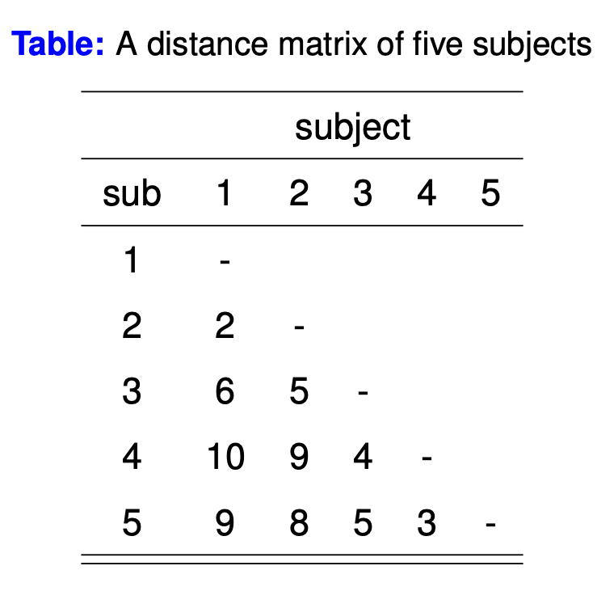
여기서 주의할 점은 거리 행렬은 대칭행렬(symmetric matrix)이며, 거리는 주어진 상황에 따라서 적절한 거리 계산 방법을 선택하여 계산한다.
주어진 거리행렬에 대하여 병합적 계층적 군집화 알고리즘의 기본 절차는 다음과 같다.
초기화
- \(N\) 개의 개체(observation)를 하나의 독립된 군집으로 둔다.
- 초기 상태에서 군집의 수는 개체의 수와 동일하다.
거리 행렬 계산
- 모든 개체(또는 군집) 간의 거리 또는 유사도를 계산한다.
- 거리 행렬의 차원은 \(N \times N\) 이다.
- \(i\)번째 개체와 \(j\)번째 개체 사이의 거리를 \(d_{ij}\)로 표기한다.
가장 가까운 두 군집 선택
- 거리 행렬 \(\pmb D = \{ d_{ij} \}\) 에서 가장 거리가 작은 두 군집을 찾는다.
군집 병합
- 선택된 두 군집을 하나의 군집으로 합친다.
- 전체 군집의 수는 한 단계 줄어든다.
거리 행렬 갱신 (Update Distance Matrix)
- 새로 형성된 군집과 나머지 군집들 간의 거리를 다시 계산한다.
- 이때 군집 간 거리를 정의하는 방식에 따라 다양한 방법이 존재한다
반복 (Iterate)
- 위의 과정을 군집의 수가 1이 될 때까지 반복한다.
새로운 군집을 형성할 때, 군집 간에 거리를 계산 방식을 연결 방법(Linkage Methods)이라고 하며 여러 가지가 있다.
이제 3 개의 군집 \(u, v, w\) 가 있다고 하자. 군집 \(u\) 와 \(v\) 를 병합하여 새로운 군집 \([uv]\) 를 형성할 때, 새로운 군집 \([uv]\) 와 다른 군집 \(w\) 사이의 거리를 계산하는 방법은 다음과 같다.
- 최단연결법 (Single linkage): 두 군집 사이의 최소 거리로 정의된다.
\[ d([uv], w) = \min(d(u, w), d(v, w)) \]
- 최장연결법 (Complete linkage): 두 군집 사이의 최대 거리로 정의된다.
\[ d([uv], w) = \max(d(u, w), d(v, w)) \]
- 평균연결법 (Average linkage): 두 군집 내 모든 쌍의 평균 거리로 정의된다.
\[ d([uv], w) = \frac{\sum_m \sum_n d(m,n)} { N_{[uv]} N_w} \] 위의 식에서 \(m\)은 군집 \([uv]\)에 속한 개체, \(n\)은 군집 \(w\)에 속한 개체를 나타내며, \(N_{[uv]}\)와 \(N_w\)는 각각 군집 \([uv]\)와 군집 \(w\)에 속한 개체의 수이다.
이제 그림 9.1 에 제시된 거리 행렬을 이용하여 계층적 군집 분석을 수행하는 과정을 위에서 제시한 3 가지 방법으로 살펴보자.
9.2.1 최단 연결법
먼저 그림 9.1 에 제시된 거리 행렬에서 가장 작은 거리를 찾는다. 이 경우, 개체 3과 개체 5 사이의 거리가 2 로 가장 작다. 따라서 개체 3과 개체 5를 병합하여 새로운 군집 [3,5]를 형성한다.
다음으로, 새로운 군집 [3,5]와 나머지 개체들(1, 2, 4) 사이의 거리를 계산한다. 최단연결법을 사용하므로, 군집 [3,5]와 개체 1 사이의 거리는 다음과 같이 계산된다.
\[ d([3,5], 1) = \min(d(3, 1), d(5, 1)) = \min(3, 11) = 3 \] 또한, 군집 [3,5]와 개체 2 사이의 거리는 다음과 같이 계산된다.
\[ d([3,5], 2) = \min(d(3, 2), d(5, 2)) = \min(7, 10) = 7 \] 이제 갱신된 거리 행렬은 다음과 같다.
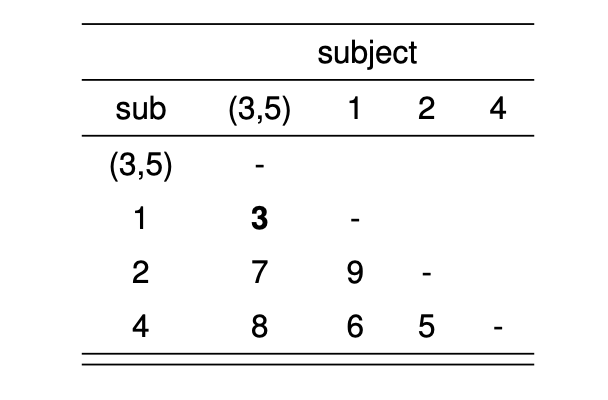
이제 그림 9.2 에 의한 거리 행렬에서 가장 작은 거리를 보이는 군집 \([3,5]\) 와 군집 \(1\) 을 통합하고 다시 거리를 계산한다. 예를 들어 통합된 군집 \([1,3,5]\) 와 군집 \(2\) 의 거리는 다음과 같이 계산된다.
\[ d([1,3,5], 2) = \min(d([3,5], 2), d(1, 2)) = \min(7,9)) = 7 \]
또한 통합된 군집 \([1,3,5]\) 와 군집 \(4\) 의 거리는 다음과 같이 계산된다.
\[ d([1,3,5], 4) = \min(d([3,5], 4), d(1, 4)) = \min(8,6) = 6 \]
이제 다시 갱신된 거리 행렬은 다음과 같다.
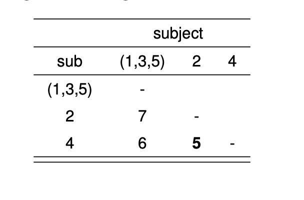
다음으로 그림 9.3 에 제시된 거리행렬에서 가장 작은 거리를 가진 군집 2 와 군집 4 를 병합한다. 이제 군집 \([1,3,5]\) 와 군집 \([2,4]\) 의 거리는 다음과 같이 계산할 수 있다.
\[ d([1,3,5], [2,4]) = \min(d([1,3,5], 2), d([1,3,5], 4)) = \min(7,6) = 6 \]
이제 최종 갱신된 거리 행렬은 다음과 같다.
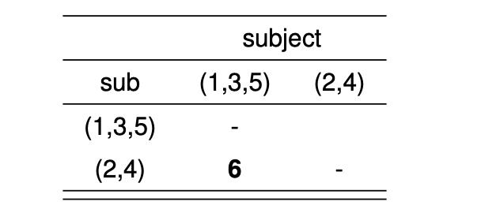
이제 2 개의 군집만 존재하므로 두 개를 병합하면 최종적으로 모든 개체를 하나의 군집으로 병합된다.
9.2.2 최장 연결법
최장 연결법(Complete linkage)은 두 군집 사이의 최대 거리를 기준으로 군집 간 거리를 정의하는 방법이다. 이 방법은 군집 내의 모든 개체들이 서로 가까워지도록 하는 경향이 있다.
최장 연결법을 사용하여 그림 9.1 에 제시된 거리 행렬을 이용하여 계층적 군집 분석을 수행하는 과정을 살펴보자.
먼저 거리 행렬에서 가장 작은 거리를 찾는다. 이 경우, 개체 3과 개체 5 사이의 거리가 2로 가장 작다. 따라서 개체 3과 개체 5를 병합하여 새로운 군집 [3,5]를 형성한다.
다음으로, 새로운 군집 [3,5]와 나머지 개체들(1, 2, 4) 사이의 거리를 계산한다.최장 연결법을 사용하므로, 군집 [3,5]와 개체 1 사이의 거리는 다음과 같이 계산된다.
\[ d([3,5], 1) = \max(d(3, 1), d(5, 1)) = \max(3, 11) = 11 \] 또한, 군집 [3,5]와 개체 2 사이의 거리는 다음과 같이 계산된다.
\[ d([3,5], 2) = \max(d(3, 2), d(5, 2)) = \max(7, 10) = 10 \] 이제 갱신된 거리 행렬은 다음과 같다.
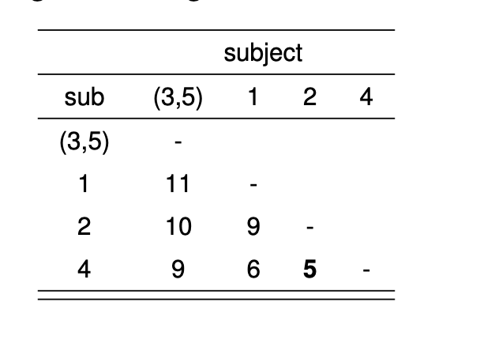
다음으로 그림 9.5 에 의한 거리행렬에서 가장 작은 거리를 보이는 군집 2 와 군집 4 을 통합하고 다시 거리를 계산한다. 예를 들어 통합된 군집 \([3,5]\) 와 군집 \([2,4]\) 의 거리는 다음과 같이 계산된다.
\[ d([2,4],[3,5]) = \max(d(2,[3,5]), d(4,[3,5])) = \max(10,9)) = 10 \]
또한 군집 \([2,4]\) 와 군집 1 의 거리는 다음과 같다.
\[ d([2,4],1) = \max(d(2,1), d(4,1)) = \max(9,6)) = 9 \]
이제 모든 거리를 갱신하면 다음과 같은 거리행렬을 얻는다.
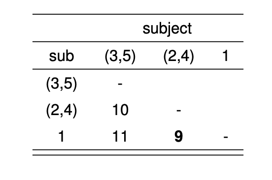
다음으로 그림 9.6 에 제시된 거리행렬에서 가장 작은 거리를 보이는 군집 \([2,4]\) 와 군집 1 을 병합한다. 이제 군집 \([1,2,4]\) 와 군집 \([3,5]\) 의 거리는 다음과 같이 계산할 수 있다.
\[ d([1,2,4], [3,5]) = \max(d(1,[3,5]), d([2,4],[3,5])) = \max(11,10) = 11 \]
이제 최종 갱신된 거리 행렬은 다음과 같다.

마지막으로 군집 \([1,2,4]\) 와 \([3,5]\) 를 통합하면 된다.
9.2.3 평균연결법
마지막으로 평균연결법(Average linkage)은 두 군집 내 모든 쌍의 평균 거리로 군집 간 거리를 정의하는 방법이다. 이 방법은 군집 내의 개체들 간의 거리를 균형 있게 반영하여 군집을 형성하는 경향이 있다.
먼저 그림 9.1 에 제시된 거리 행렬에서 가장 작은 거리를 찾는다. 이 경우, 개체 3과 개체 5 사이의 거리가 2 로 가장 작다. 따라서 개체 3과 개체 5를 병합하여 새로운 군집 [3,5]를 형성한다.
다음으로, 새로운 군집 [3,5]와 나머지 개체들(1, 2, 4) 사이의 거리를 계산한다. 평균 연결법을 사용하므로, 군집 [3,5]와 개체 1 사이의 거리는 다음과 같이 계산된다.
\[ d([3,5], 1) = mean(d(3, 1), d(5, 1)) = mean(3, 11) = \frac{3+11}{2} = 7 \] 또한, 군집 [3,5]와 개체 2 사이의 거리는 다음과 같이 계산된다.
\[ d([3,5], 2) = mean(d(3, 2), d(5, 2)) = mean(7,10) = \frac{7+10}{2} = 8.5 \] 이제 갱신된 거리 행렬은 다음과 같다.
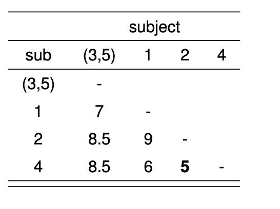
이제 그림 9.8 에 의한 거리행렬에서 가장 작은 거리를 보이는 군집 2 와 군집 4을 통합하고 다시 거리를 계산한다. 예를 들어 통합된 군집 \([2,4]\) 와 군집 \([3,5]\) 의 거리는 다음과 같이 계산된다.
\[ d([2,4],[3,5]) = mean (d_{2,3}, d_{2,5}, d_{4,3}, d_{4,5}) = mean(7,10,8,9) = \frac{7+10+8+9}{4} = 8.5 \]
평균 연결법은 위와 같이 거리를 두 든 조합을 고려하여 평균으로 거리를 츠측정하는 방법으로 군집 간의 거리를 계산한다. 이 과정을 반복하여 최종적으로 모든 개체가 하나의 군집으로 통합될 때까지 진행한다.
9.2.4 와드 방법
와드 방법(Ward’s method)는 가장 자주 사용되는 방법으로 군집 내 분산의 증가량을 최소화하는 방식으로 군집을 병합한다. 군집이 결합될 때 발생하는 군집 내 제곱합(Within-Cluster Sum of Squares)의 증가를 최소화하는 방향으로 군집을 합친다.
9.2.5 요약과 예제
다음은 각 연결법의 방법과 특징을 요약한 표이다.
| 방법 | 정의 | 특징 |
|---|---|---|
| 최단연결법 | 두 군집 사이의 최소 거리 | 긴 “사슬형(chain-like)” 군집 생성 가능 |
| 최장연결법 | 두 군집 사이의 최대 거리 | 조밀하고 균일한 군집 형성 |
| 평균연결법 | 두 군집 내 모든 쌍의 평균 거리 | 균형 잡힌 결과, 이상치에 덜 민감 |
| 와드 방법 | 군집 내 제곱합 증가량 최소화 | 분산 기반, 매우 안정적이고 자주 사용됨 |
분할적 계층적 군집 방법(Divisive Hierarchical Methods)은 병합적 계층적 군집 방법(Agglomerative Hierarchical Methods)에 비해 상대적으로 덜 사용되어 왔다. 군집분석의 성능은 군집의 형태, 군집들이 서로 얼마나 겹쳐 있는가에 크게 의존한다.
- 거리 행렬 만들기
x <- c(9,3,6,11,7,5,10,9,2,8)
dd <- matrix(0,5,5)
k<-1
for (i in 1:4) {
for ( j in (i+1):5) {
dd[i,j] = x[k]
dd[j,i] = x[k]
k<-k+1
}
dd[i,i]=0
}
d <- as.dist(dd)
d 1 2 3 4
2 9
3 3 7
4 6 5 9
5 11 10 2 8- 최단연결법
re1 <- hclust(d, method="single")
plot(re1)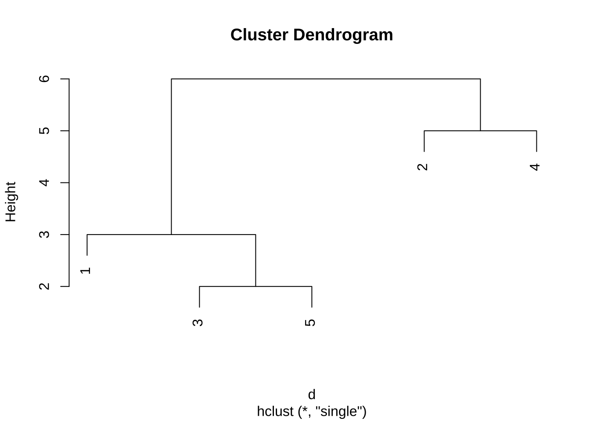
- 최장연결법
re2 <- hclust(d, method="complete")
plot(re2)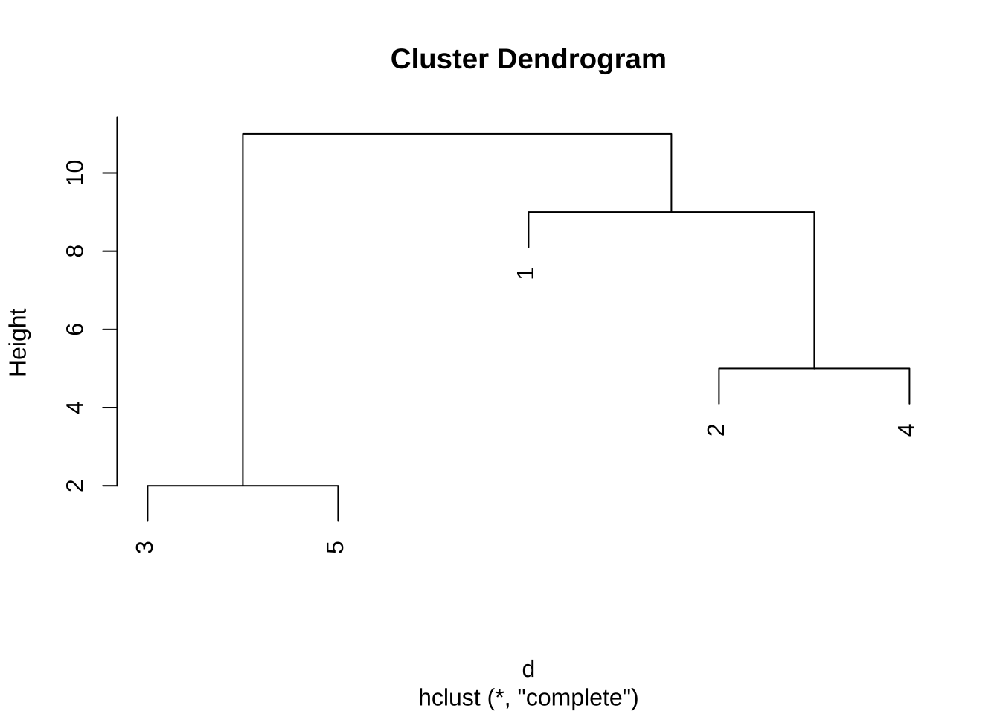
- 평균연결법
re3 <- hclust(d, method="average")
plot(re3)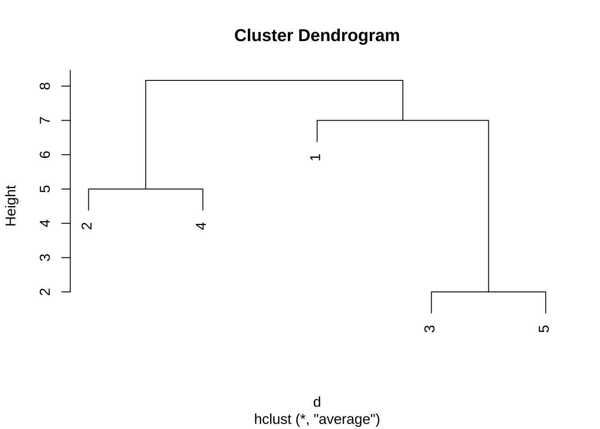
- 와드 방법(Ward’s method)
re4 <- hclust(d, method="ward.D2")
plot(re4)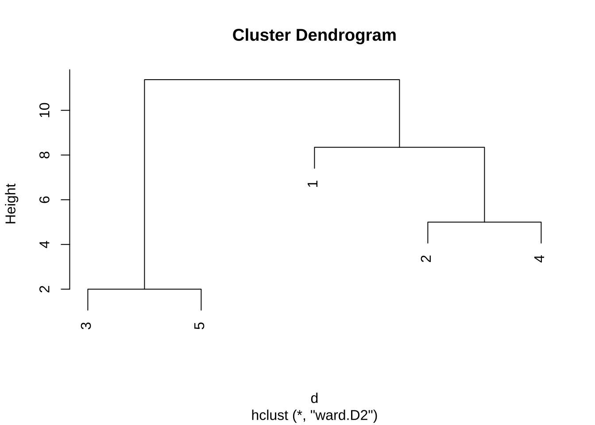
9.2.5.1 신체치수 자료
20명의 가슴, 허리, 엉덩이, 성별 측정 자료에 계층적 군집분석을 적용해 보자.
- 자료의 생성
measure <-
structure(list(V1 = 1:20, V2 = c(34L, 37L, 38L, 36L, 38L, 43L,
40L, 38L, 40L, 41L, 36L, 36L, 34L, 33L, 36L, 37L, 34L, 36L, 38L,
35L), V3 = c(30L, 32L, 30L, 33L, 29L, 32L, 33L, 30L, 30L, 32L,
24L, 25L, 24L, 22L, 26L, 26L, 25L, 26L, 28L, 23L), V4 = c(32L,
37L, 36L, 39L, 33L, 38L, 42L, 40L, 37L, 39L, 35L, 37L, 37L, 34L,
38L, 37L, 38L, 37L, 40L, 35L)), .Names = c("V1", "V2", "V3",
"V4"), class = "data.frame", row.names = c(NA, -20L))
measure <- measure[,-1]
names(measure) <- c("chest", "waist", "hips")
measure$gender <- gl(2, 10)
levels(measure$gender) <- c("male", "female")
head(measure) chest waist hips gender
1 34 30 32 male
2 37 32 37 male
3 38 30 36 male
4 36 33 39 male
5 38 29 33 male
6 43 32 38 male- 거리행렬의 생성
dm <- dist(measure[, c("chest", "waist", "hips")])
round(dm, 2) 1 2 3 4 5 6 7 8 9 10 11 12
2 6.16
3 5.66 2.45
4 7.87 2.45 4.69
5 4.24 5.10 3.16 7.48
6 11.00 6.08 5.74 7.14 7.68
7 12.04 5.92 7.00 5.00 10.05 5.10
8 8.94 3.74 4.00 3.74 7.07 5.74 4.12
9 7.81 3.61 2.24 5.39 4.58 3.74 5.83 3.61
10 10.10 4.47 4.69 5.10 7.35 2.24 3.32 3.74 3.00
11 7.00 8.31 6.40 9.85 5.74 11.05 12.08 8.06 7.48 10.25
12 7.35 7.07 5.48 8.25 6.00 9.95 10.25 6.16 6.40 8.83 2.24
13 7.81 8.54 7.28 9.43 7.55 12.08 11.92 7.81 8.49 10.82 2.83 2.24
14 8.31 11.18 9.64 12.45 8.66 14.70 15.30 11.18 11.05 13.75 3.74 5.20
15 7.48 6.16 4.90 7.07 6.16 9.22 9.00 4.90 5.74 7.87 3.61 1.41
16 7.07 6.00 4.24 7.35 5.10 8.54 9.11 5.10 5.00 7.48 3.00 1.41
17 7.81 7.68 6.71 8.31 7.55 11.40 10.77 6.71 7.87 9.95 3.74 2.24
18 6.71 6.08 4.58 7.28 5.39 9.27 9.49 5.39 5.66 8.06 2.83 1.00
19 9.17 5.10 4.47 5.48 7.07 6.71 5.74 2.00 4.12 5.10 6.71 4.69
20 7.68 9.43 7.68 10.82 7.00 12.41 13.19 9.11 8.83 11.53 1.41 3.00
13 14 15 16 17 18 19
2
3
4
5
6
7
8
9
10
11
12
13
14 3.74
15 3.00 6.40
16 3.61 6.40 1.41
17 1.41 5.10 2.24 3.32
18 2.83 5.83 1.00 1.00 2.45
19 6.40 9.85 3.46 3.74 5.39 4.12
20 2.45 2.45 4.36 4.12 3.74 3.74 7.68- 최단연결법(single linkage)과 덴드로그램
re1 <- hclust(dm, method="single")
plot(re1)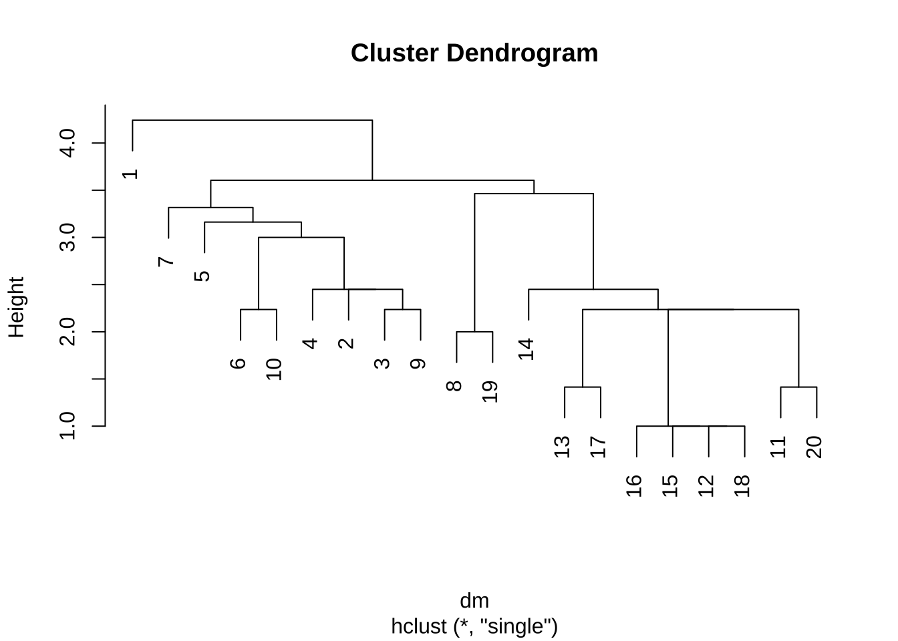
- 최장연결법(complete linkage)과 덴드로그램
re2 <- hclust(dm, method="complete")
plot(re2)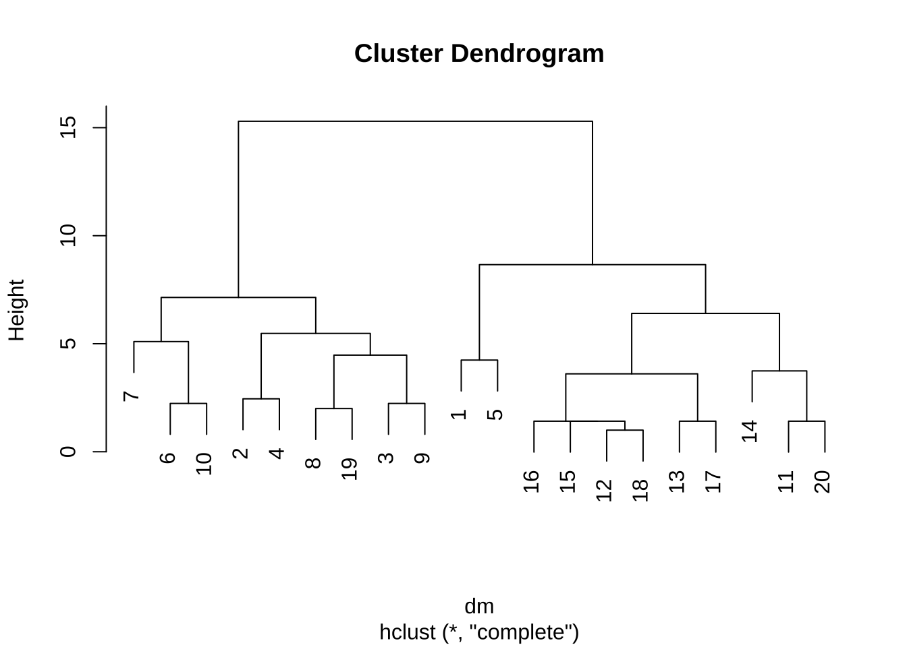
- 평균연결법(average linkage)과 덴드로그램
re3 <- hclust(dm, method="average")
plot(re3)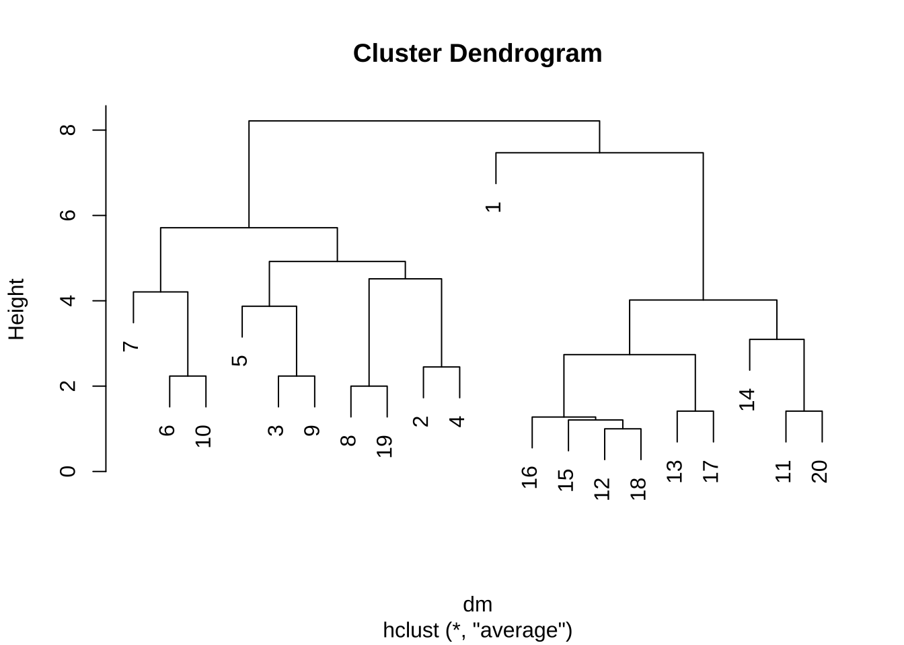
9.2.5.2 2개의 군집으로 나누었을 때 그림들
자료가 남자10명, 여자 10영으로 구성되어있기 때문에 2개의 군집으로 나누어 진다고 예상
덴드로그램 높이(y축, 거리)의 변화를 보고 2개의 군집으로 나눌 수 있는 기준(cut point)를 결정
예를 들어 최단거리법에서는 cut point = 3.8
자료에 주성분 분석을 실시하여 첫 번째와 두 번째 주성분을 이용해 삼포도를 그리고 군집분석의 결과를 나타낸다 (1 과 2는 다른 군집)
최단거리법의 문제점: 연쇄현상(chaining)이 나타난다.
연쇄현상(chaining)은 두 개의 군집이 연결되어 있을 때 군집을 분리하지 못하는 현상
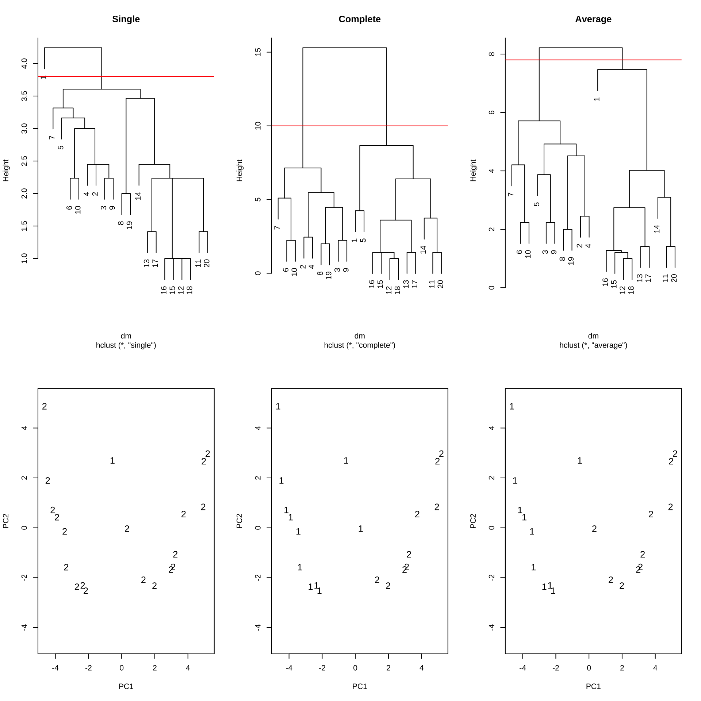
- 실제로 남자와 여자가 어떻게 배치되는지 보자.
- 최장연결법과 평균연결법은 남자와 여자를 잘 구분한다.
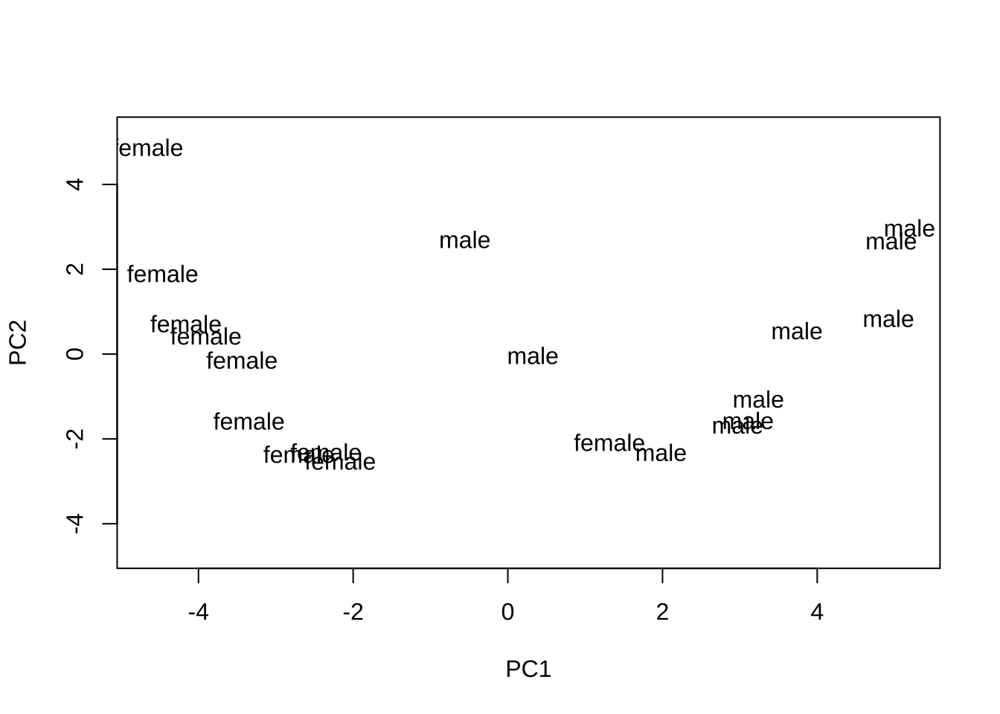
9.2.5.3 제트 전투기 군집화
- 22개 미국 전투기에 대한 6개 변수
다음은 22개 미국 전투기에 대한 6개 변수들이며 군집분석에는 두 번째부터 다섯번째까지 4개의 변수를 이용하며 최장연결법을 적용한다.
FED: 처음비행날짜SPR: 출력RGF: 비행범위 요인PLF: 탑재량SLF: 무게요인CAR: 항모착륙가능여부
자료를 다음과 같이 만든다.
jet <-
structure(list(V1 = c(82L, 89L, 101L, 107L, 115L, 122L, 127L,
137L, 147L, 166L, 174L, 175L, 177L, 184L, 187L, 189L, 194L, 197L,
201L, 204L, 255L, 328L), V2 = c(1.468, 1.605, 2.168, 2.054, 2.467,
1.294, 2.183, 2.426, 2.607, 4.567, 4.588, 3.618, 5.855, 2.898,
3.88, 0.455, 8.088, 6.502, 6.081, 7.105, 8.548, 6.321), V3 = c(3.3,
3.64, 4.87, 4.72, 4.11, 3.75, 3.97, 4.65, 3.84, 4.92, 3.82, 4.32,
4.53, 4.48, 5.39, 4.99, 4.5, 5.2, 5.65, 5.4, 4.2, 6.45), V4 = c(0.166,
0.154, 0.177, 0.275, 0.298, 0.15, 0, 0.117, 0.155, 0.138, 0.249,
0.143, 0.172, 0.178, 0.101, 0.008, 0.251, 0.366, 0.106, 0.089,
0.222, 0.187), V5 = c(0.1, 0.1, 2.9, 1.1, 1, 0.9, 2.4, 1.8, 2.3,
3.2, 3.5, 2.8, 2.5, 3, 3, 2.64, 2.7, 2.9, 2.9, 3.2, 2.9, 2),
V6 = c(0L, 0L, 1L, 0L, 1L, 0L, 1L, 0L, 0L, 1L, 0L, 0L, 1L,
0L, 1L, 0L, 1L, 1L, 1L, 1L, 0L, 1L)), .Names = c("V1", "V2",
"V3", "V4", "V5", "V6"), class = "data.frame", row.names = c(NA,
-22L))
colnames(jet) <- c("FFD", "SPR", "RGF", "PLF", "SLF", "CAR")
rownames(jet) <- c("FH-1", "FJ-1", "F-86A", "F9F-2", "F-94A", "F3D-1", "F-89A",
"XF10F-1", "F9F-6", "F-100A", "F4D-1", "F11F-1",
"F-101A", "F3H-2", "F-102A", "F-8A", "F-104B",
"F-105B", "YF-107A", "F-106A", "F-4B", "F-111A")
jet$CAR <- factor(jet$CAR, labels = c("no", "yes"))
head(jet) FFD SPR RGF PLF SLF CAR
FH-1 82 1.468 3.30 0.166 0.1 no
FJ-1 89 1.605 3.64 0.154 0.1 no
F-86A 101 2.168 4.87 0.177 2.9 yes
F9F-2 107 2.054 4.72 0.275 1.1 no
F-94A 115 2.467 4.11 0.298 1.0 yes
F3D-1 122 1.294 3.75 0.150 0.9 no- 계층적 군집분석
X <- scale(jet[, c("SPR", "RGF", "PLF", "SLF")],
center = FALSE, scale = TRUE)
dj <- dist(X)
plot(cc <- hclust(dj), main = "Jets clustering")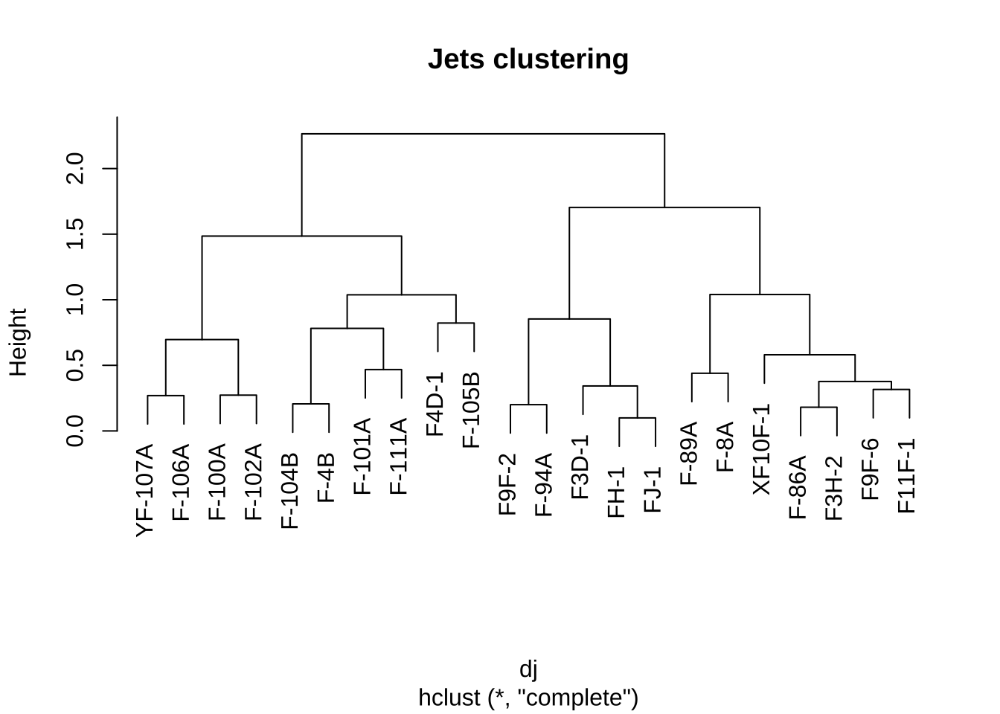
cc
Call:
hclust(d = dj)
Cluster method : complete
Distance : euclidean
Number of objects: 22 - 2개의 주성분을 이용한 군집분석의 시각화
pr <- prcomp(dj)$x[, 1:2]
plot(pr, pch = (1:2)[cutree(cc, k = 2)],
col = c("black", "darkgrey")[jet$CAR],
xlim = range(pr) * c(1, 1.5))
legend("topright", col = c("black", "black",
"darkgrey", "darkgrey"),
legend = c("1 / no", "2 / no", "1 / yes", "2 / yes"),
pch = c(1:2, 1:2), title = "Cluster / CAR", bty = "n")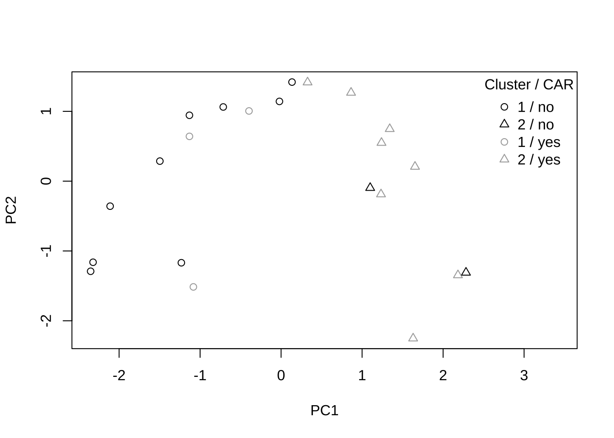
9.3 K-평균 군집분석
비계층적 군집 분석 방법 중에서 가장 널리 사용되는 방법은 K-평균(K-means) 군집 분석이다. K-평균 군집 분석은 주어진 개체들을 미리 정해진 군집의 개수 \(k\) 로 구성된 군집 \(G_1, G_2, \dots, G_k\) 으로 나누는 방법이다.
군집안에 속한 개체의 개수를 \(n_l\) 라고 하자. 또한 각 군집의 중심(centroid)을 \(\pmb c_l\) 라고 하자. 그러면 K-평균 군집 분석의 목적은 다음의 목적함수인 그룹내 제곱합(within-group sum of squares; WGSS)를 최소화하는 것이다.
\[ WGSS = \sum_{j=1}^p \sum_{l=1}^{k} \sum_{ i \in G_l} (X_{ij} - c_{lj})^2 \tag{9.1}\]
식 9.1 에서 \(c_{lj}\) 는 \(l\) 번째 군집에 속하는 개체들의 관측값 \(X_{ij}\) 에 대한 군집의 중심값이다. 대표적인 군집의 중심값은 군집에 속한 개체들의 관측값들의 평균이며 다음과 같이 쓸 수있다.
\[ \bar X_{lj} =\frac{\sum_{i \in G_l} X_{ij} }{n_l} \equiv c_{lj}, \quad l=1,2,\dots, k, \quad j=1,2,\dots,p \]
식 9.1 의 그룹내 제곱합을 최소로 하는 K-평균 군집 분석 방법의 기본 절차는 다음과 같다.
초기화: 군집의 수 \(k\)를 미리 정한다. 초기 중심점(centroid)을 무작위로 선택하거나 특정 방법으로 선택한다.
할당 단계: 각 개체를 가장 가까운 중심점에 할당하여 군집을 형성한다. 이때 거리는 유클리드 거리(Euclidean distance) 등 적절한 거리을 사용할 수 있다.
갱신 단계: 각 군집의 중심점을 해당 군집에 속한 개체들의 관측값을 이용하여 갱신한다.
반복: 할당 단계(2)와 갱신 단계(4)를 개체의 군집에 대한 할당이 변하지 않아서 중심점이 더 이상 변하지 않거나, 최대 반복 횟수에 도달할 때까지 반복한다.
K-평균 군집 분석은 간단하고 효율적이지만, 군집의 수 \(K\)를 미리 정해야 한다는 단점이 있다. 또한 초기 중심점의 선택에 따라 결과가 달라질 수 있다. 또한 실제 군집 모양과 다르게 군집의 모양이 구형 구조(spherical structure)로 나타나는 현상도 유의해야 한다.
이러한 단점에도 불구하고 K-평균 군집 분석은 대규모 데이터셋에 대해서도 효율적으로 작동하며, 다양한 분야에서 널리 사용되고 있다.
9.3.1 예제: 미국의 50개 주 범죄율 자료
crime 데이터는 미국 50개 주에 대한 7가지 범죄율(인구 10만명당 살인, 성폭행, 강도, 폭력행위, 가택침입, 절도, 자동차 절도)을 포함하고 있다. crime 자료를 아래와 같이 생성하자.
`crime` <-
structure(c(2, 2.2, 2, 3.6, 3.5, 4.6, 10.7, 5.2, 5.5, 5.5, 6,
8.9, 11.3, 3.1, 2.5, 1.8, 9.2, 1, 4, 3.1, 4.4, 4.9, 9, 31, 7.1,
5.9, 8.1, 8.6, 11.2, 11.7, 6.7, 10.4, 10.1, 11.2, 8.1, 12.8,
8.1, 13.5, 2.9, 3.2, 5.3, 7, 11.5, 9.3, 3.2, 12.6, 5, 6.6, 11.3,
8.6, 4.8, 14.8, 21.5, 21.8, 29.7, 21.4, 23.8, 30.5, 33.2, 25.1,
38.6, 25.9, 32.4, 67.4, 20.1, 31.8, 12.5, 29.2, 11.6, 17.7, 24.6,
32.9, 56.9, 43.6, 52.4, 26.5, 18.9, 26.4, 41.3, 43.9, 52.7, 23.1,
47, 28.4, 25.8, 28.9, 40.1, 36.4, 51.6, 17.3, 20, 21.9, 42.3,
46.9, 43, 25.3, 64.9, 53.4, 51.1, 44.9, 72.7, 31, 28, 24, 22,
193, 119, 192, 514, 269, 152, 142, 90, 325, 301, 73, 102, 42,
170, 7, 16, 51, 80, 124, 304, 754, 106, 41, 88, 99, 214, 367,
83, 208, 112, 65, 80, 224, 107, 240, 20, 21, 22, 145, 130, 169,
59, 287, 135, 206, 343, 88, 106, 102, 92, 103, 331, 192, 205,
431, 265, 176, 235, 186, 434, 424, 162, 148, 179, 370, 32, 87,
184, 252, 241, 476, 668, 167, 99, 354, 525, 319, 605, 222, 274,
408, 172, 278, 482, 285, 354, 118, 178, 243, 329, 538, 437, 180,
354, 244, 286, 521, 401, 103, 803, 755, 949, 1071, 1294, 1198,
1221, 1071, 735, 988, 887, 1180, 1509, 783, 1004, 956, 1136,
385, 554, 748, 1188, 1042, 1296, 1728, 813, 625, 1225, 1340,
1453, 2221, 824, 1325, 1159, 1076, 1030, 1461, 1787, 2049, 783,
1003, 817, 1792, 1845, 1908, 915, 1604, 1861, 1967, 1696, 1162,
1339, 2347, 2208, 2697, 2189, 2568, 2758, 2924, 2822, 1654, 2574,
2333, 2938, 3378, 2802, 2785, 2801, 2500, 2049, 1939, 2677, 3008,
3090, 2978, 4131, 2522, 1358, 2423, 2846, 2984, 4373, 1740, 2126,
2304, 1845, 2305, 3417, 3142, 3987, 3314, 2800, 3078, 4231, 3712,
4337, 4074, 3489, 4267, 4163, 3384, 3910, 3759, 164, 228, 181,
906, 705, 447, 637, 776, 354, 376, 328, 628, 800, 254, 288, 158,
439, 120, 99, 168, 258, 272, 545, 975, 219, 169, 208, 277, 430,
598, 193, 544, 267, 150, 195, 442, 649, 714, 215, 181, 169, 486,
343, 419, 223, 478, 315, 402, 762, 604, 328), .Dim = c(51L, 7L
), .Dimnames = list(c("ME", "NH", "VT", "MA", "RI", "CT", "NY",
"NJ", "PA", "OH", "IN", "IL", "MI", "WI", "MN", "IA", "MO", "ND",
"SD", "NE", "KS", "DE", "MD", "DC", "VA", "WV", "NC", "SC", "GA",
"FL", "KY", "TN", "AL", "MS", "AR", "LA", "OK", "TX", "MT", "ID",
"WY", "CO", "NM", "AZ", "UT", "NV", "WA", "OR", "CA", "AK", "HI"
), c("Murder", "Rape", "Robbery", "Assault", "Burglary", "Theft",
"Vehicle")))
crime <- as.data.frame(crime)
head(crime) Murder Rape Robbery Assault Burglary Theft Vehicle
ME 2.0 14.8 28 102 803 2347 164
NH 2.2 21.5 24 92 755 2208 228
VT 2.0 21.8 22 103 949 2697 181
MA 3.6 29.7 193 331 1071 2189 906
RI 3.5 21.4 119 192 1294 2568 705
CT 4.6 23.8 192 205 1198 2758 447이제 각 변수에 대한 산점도와 상관계수 행렬을 보자. 산점도에 보면 1개의 이상치가 존재하는 것을 알 수 있다.
ggpairs(crime,
upper = list(continuous = wrap("cor", size = 4)), # 상관계수 표시
lower = list(continuous = wrap("points", alpha=0.3, size=0.5)), # 산점도
diag = list(continuous = wrap("barDiag", fill="lightblue"))) + # 히스토그램
theme(text = element_text(family = "noto"))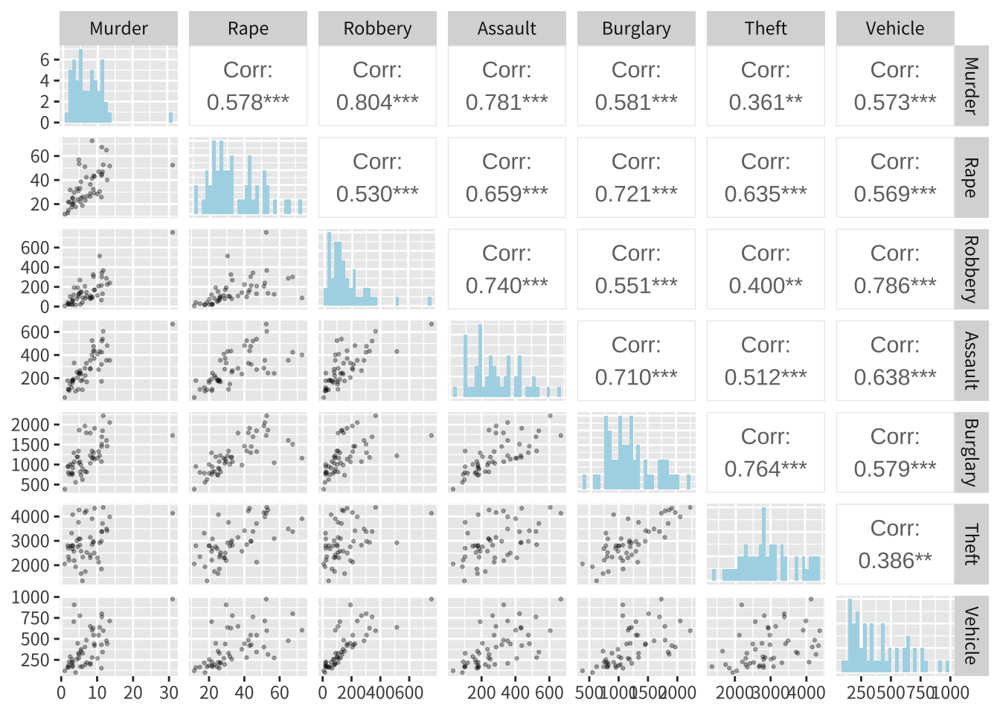
Washington D.C. 가 살인율이 너무 높아서 이상치로 나타나 분석에서 제외한다.
crime %>% filter( Murder > 15) Murder Rape Robbery Assault Burglary Theft Vehicle
DC 31 52.4 754 668 1728 4131 975crime2 <- crime %>% filter(rownames(crime) != "DC")
head(crime2) Murder Rape Robbery Assault Burglary Theft Vehicle
ME 2.0 14.8 28 102 803 2347 164
NH 2.2 21.5 24 92 755 2208 228
VT 2.0 21.8 22 103 949 2697 181
MA 3.6 29.7 193 331 1071 2189 906
RI 3.5 21.4 119 192 1294 2568 705
CT 4.6 23.8 192 205 1198 2758 447각 변수에 대한 분산이 매우 다르므로 각 변수를 표준화한다. 이 때 표준화 방법은 각 변수를 그 범위(range) 로 나누어 주는 방법을 적용한다.
crime_s <- crime2 %>%
mutate(
across(
where(is.numeric),
~ {
rng <- range(., na.rm = TRUE)
(.) / (rng[2] - rng[1])
}
)
)
head(crime_s) Murder Rape Robbery Assault Burglary Theft Vehicle
ME 0.160 0.2422259 0.05522682 0.1780105 0.4373638 0.7784411 0.2032218
NH 0.176 0.3518822 0.04733728 0.1605585 0.4112200 0.7323383 0.2825279
VT 0.160 0.3567921 0.04339250 0.1797557 0.5168845 0.8945274 0.2242875
MA 0.288 0.4860884 0.38067061 0.5776614 0.5833333 0.7260365 1.1226766
RI 0.280 0.3502455 0.23471400 0.3350785 0.7047930 0.8517413 0.8736059
CT 0.368 0.3895254 0.37869822 0.3577661 0.6525054 0.9147595 0.5539033sapply(crime_s, var) Murder Rape Robbery Assault Burglary Theft Vehicle
0.07638350 0.05618847 0.04625407 0.05900647 0.05218049 0.06218510 0.06755843 K-평균 군집 분석을 수행하는 함수는 kmeans() 이다. 먼저 1부터 6까지 군집의 개수에 따른 그룹내 제곱합의 변화를 살펴보자. 군집의 개수를 정할 때 엘보우 방법(elbow method)을 사용한다. 엘보우 방법은 군집의 개수에 따른 그룹내 제곱합의 변화를 그래프로 나타내고, 그래프에서 급격한 변화가 일어나는 지점을 찾아 군집의 개수를 결정하는 방법이다.우
n <- nrow(crime_s)
wss <- rep(0, 6)
wss[1] <- (n - 1) * sum(sapply(crime_s, var))
for (i in 2:6)
wss[i] <- sum(kmeans(crime_s,
centers = i)$withinss)
wss[1] 20.568070 10.569006 8.824753 7.634718 6.853599 5.755424plot(1:6, wss, type = "b", xlab = "Number of groups",
ylab = "Within groups sum of squares")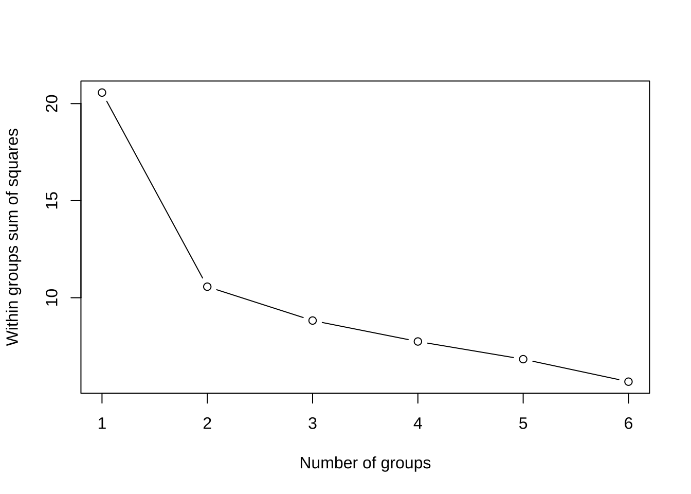
위의 그래프에서 엘보우 방법을 적용하면 2개의 군집에서 꺽인 부분이 나타나므로 2개의 군집으로 k-평균 군집분석을 적용해 보자.
kmeans(crime_s, centers = 2)K-means clustering with 2 clusters of sizes 22, 28
Cluster means:
Murder Rape Robbery Assault Burglary Theft Vehicle
1 0.7494545 0.7425978 0.4516765 0.6889576 0.8406368 1.1170963 0.6868311
2 0.3791429 0.4059504 0.1456044 0.3177512 0.5033847 0.8506515 0.3061161
Clustering vector:
ME NH VT MA RI CT NY NJ PA OH IN IL MI WI MN IA MO ND SD NE KS DE MD VA WV NC
2 2 2 1 2 2 1 1 2 2 2 1 1 2 2 2 1 2 2 2 2 2 1 2 2 2
SC GA FL KY TN AL MS AR LA OK TX MT ID WY CO NM AZ UT NV WA OR CA AK HI
1 1 1 2 1 2 2 2 1 1 1 2 2 2 1 1 1 2 1 1 1 1 1 2
Within cluster sum of squares by cluster:
[1] 6.047951 4.521055
(between_SS / total_SS = 48.6 %)
Available components:
[1] "cluster" "centers" "totss" "withinss" "tot.withinss"
[6] "betweenss" "size" "iter" "ifault" 각 변수의 원래 척도로 중심점을 변환하려면 다음과 같이 한다.
rge <- sapply(crime2, function(x) diff(range(x)))
kmeans(crime_s, centers = 2)$centers * rge Murder Rape Robbery Assault Burglary Theft Vehicle
1 9.368182 376.4971 829.2781 555.98881 51.36291 640.0962 2070.7959
2 23.165629 232.6096 438.9973 3.97189 255.21604 1561.7962 247.0357주성분 분석을 이용하여 군집을 시각화해보자. 첫번쨰 주성분은 모든 범죄에 대한 평균 개념이며 두 번째 주성분은 성폭행, 가택침입, 절도와 다른 범죄의 차이로 해것할 수 있다.
# 1. 주성분 분석
crime_pca <- prcomp(crime_s, scale. = TRUE)
crime_pcaStandard deviations (1, .., p=7):
[1] 2.1376534 0.9821717 0.7849079 0.5839701 0.4629549 0.4473740 0.3069276
Rotation (n x k) = (7 x 7):
PC1 PC2 PC3 PC4 PC5 PC6
Murder 0.3794812 -0.2532759 0.60240357 -0.04387921 0.1992800 -0.32002112
Rape 0.3917234 0.2129042 0.08903091 -0.82757875 -0.2273617 0.04562582
Robbery 0.3811897 -0.4150948 -0.25857003 0.23354486 -0.5286578 -0.47190706
Assault 0.4096666 -0.1372090 0.30642169 0.32964915 -0.1893113 0.74117076
Burglary 0.4108901 0.3152629 0.01613341 0.24359841 0.5966670 -0.24104906
Theft 0.3104366 0.6973264 -0.22227257 0.24780086 -0.2909714 -0.03368514
Vehicle 0.3524385 -0.3372512 -0.64712080 -0.17097024 0.3906411 0.25344635
PC7
Murder 0.5337639
Rape -0.2337444
Robbery -0.2425152
Assault -0.1600352
Burglary -0.5079981
Theft 0.4698464
Vehicle 0.3117965# 2. k-means 클러스터링
km <- kmeans(crime_s, centers = 2)
# 3. 데이터 프레임 생성
crime_pca_df <- as.data.frame(crime_pca$x[, 1:2]) %>%
mutate(cluster = factor(km$cluster), state = rownames(crime_s))
# 4. 시각화
ggplot(crime_pca_df, aes(x = PC1, y = PC2, color = cluster, , label = state)) +
geom_point(size = 3, alpha = 0.8) +
geom_text(vjust = -0.7, size = 3) + # 점 위에 도시 이름 표시
labs(
title = "PCA Plot with k-means (k = 2)",
x = "Principal Component 1",
y = "Principal Component 2",
color = "Cluster"
) 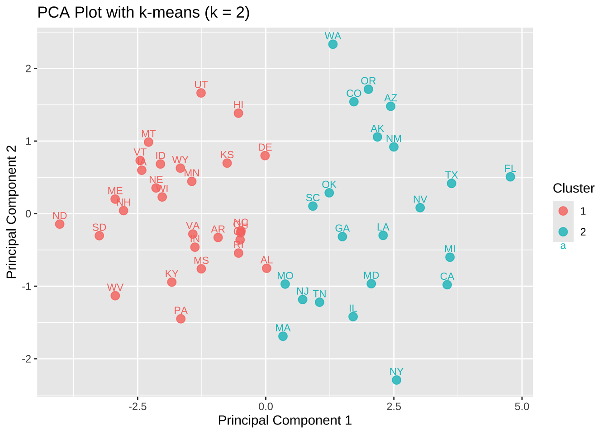
9.3.2 예제:로마-브리튼 도자기 군집화
자료는 로마-브리튼(Romano-British) 도자기에 대한 화학 분석 결과이다. 데이터 세트는 45점의 항아리에 대한 화학 분석 결과로 구성되며, 다음과 같이 제시된다. 자료는 세 지역에서 제작았으며 지역 1은 가마(kilns) 1, 지역 2는 가마 2와 3, 지역 3은 가마 4와 5를 포함하고 있다.
library(HSAUR2)필요한 패키지를 로딩중입니다: tools
다음의 패키지를 부착합니다: 'HSAUR2'The following object is masked from 'package:tidyr':
householdhead(pottery) Al2O3 Fe2O3 MgO CaO Na2O K2O TiO2 MnO BaO kiln
1 18.8 9.52 2.00 0.79 0.40 3.20 1.01 0.077 0.015 1
2 16.9 7.33 1.65 0.84 0.40 3.05 0.99 0.067 0.018 1
3 18.2 7.64 1.82 0.77 0.40 3.07 0.98 0.087 0.014 1
4 16.9 7.29 1.56 0.76 0.40 3.05 1.00 0.063 0.019 1
5 17.8 7.24 1.83 0.92 0.43 3.12 0.93 0.061 0.019 1
6 18.8 7.45 2.06 0.87 0.25 3.26 0.98 0.072 0.017 1먼저 45개 도자기의 표준화된 측정값에 대한 유클리드 거리 행렬을 계산해보자. 결과로 얻어진 \(45 \times 45\) 행렬은 시각적으로 표현할 수 있으며 여기서는 ggplot2의 geo_tile 함수를 사용해 만들었다. 이러한 플롯은 비유사성 행렬의 각 셀을 색상 또는 회색값과 연관시킵니다. 거리 0인 셀(즉, 불일치 행렬의 대각선 요소)에는 빍은 색을, 유클리드 거리가 더 큰 셀에는 어두운 새으로나타내었다. 아래 그림에서 군집 간 차이가 작은(밝은 사각형) 최소 3개의 뚜렷한 군집이 존재하는 힌트을 주며, 다른 모든 셀에서는 훨씬 더 먼 거리가 나타나고 있다.
# 거리계산 부분은 그대로 사용
pots <- scale(pottery[, colnames(pottery) != "kiln"], center = FALSE) %>%
as.data.frame()
pottery_dist <- dist(pots)
# dist 객체를 행렬로 바꾸고 long 형태로 변환
dist_mat <- as.matrix(pottery_dist)
dist_df <- as.data.frame(dist_mat) %>%
mutate(row = rownames(.)) %>%
pivot_longer(
cols = -row,
names_to = "col",
values_to = "distance"
)
# pot 번호를 factor 로 변환
dist_df <- dist_df %>%
mutate(
row = factor(row, levels = rownames(dist_mat)),
col = factor(col, levels = rownames(dist_mat))
)
# 흑백 heatmap (lattice의 color = FALSE와 유사)
ggplot(dist_df, aes(x = col, y = row, fill = distance)) +
geom_tile() +
scale_fill_gradient(
name = "Distance",
low = "white",
high = "black"
) +
labs(
x = "Pot Number",
y = "Pot Number",
title = "Distance Matrix of Pottery Data"
) +
coord_equal() +
theme_minimal() +
theme(
axis.text.x = element_blank(),
axis.text.y = element_blank(),
axis.ticks.x = element_blank(),
axis.ticks.y = element_blank()
)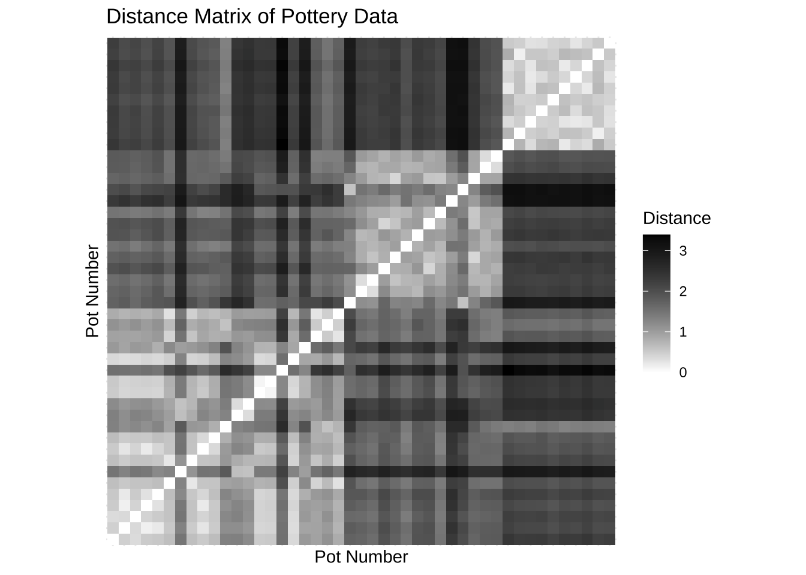
이제 엘보우 그래프를 이용하여 군집의 개수에 따른 그룹내 제곱합의 변화를 보자. 3개의 군집으로 나누는 것이 가장 적합해 보인다.
n <- nrow(pots)
wss <- rep(0, 6)
wss[1] <- (n - 1) * sum(sapply(pots, var))
for (i in 2:6)
wss[i] <- sum(kmeans(pots,
centers = i)$withinss)
plot(1:6, wss, type = "b", xlab = "Number of groups",
ylab = "Within groups sum of squares")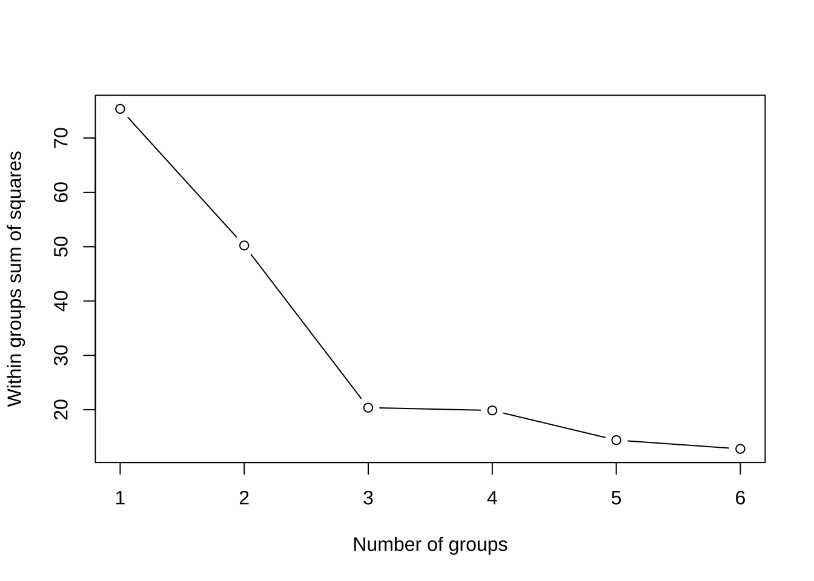
3개의 군집으로 분석을 수행하고, 각 도자기가 속한 군집과 실제 가마 정보를 교차표로 나타내 보자. 지역 1은 가마(kilns) 1, 지역 2는 가마 2와 3, 지역 3은 가마 4와 5 로 구성되어 있는 사실을 군집 분석의 결과로 확인할 수 있다.
set.seed(29)
pottery_cluster <- kmeans(pots, centers = 3)$cluster
pottery_cluster 1 2 3 4 5 6 7 8 9 10 11 12 13 14 15 16 17 18 19 20 21 22 23 24 25 26
1 1 1 1 1 1 1 1 1 1 1 1 1 1 1 1 1 1 1 1 1 3 3 3 3 3
27 28 29 30 31 32 33 34 35 36 37 38 39 40 41 42 43 44 45
3 3 3 3 3 3 3 3 3 2 2 2 2 2 2 2 2 2 2 xtabs(~ pottery_cluster + kiln, data = pottery) kiln
pottery_cluster 1 2 3 4 5
1 21 0 0 0 0
2 0 0 0 5 5
3 0 12 2 0 0참주분고석을로 이용한 시각화를 수행해 보자. 3개의 지역이 군집으로 뚜렷하게 구분되는 것을 알 수 있다.
# 1. PCA 수행
pots_pca <- prcomp(pots, scale. = TRUE)
# 2. K-means 클러스터링
km <- kmeans(pots, centers = 3)
# 3. 데이터 프레임으로 변환
pots_pca_df <- as.data.frame(pots_pca$x[, 1:2]) %>%
mutate(cluster = factor(km$cluster))
# 4. 시각화
ggplot(pots_pca_df, aes(x = PC1, y = PC2, color = cluster)) +
geom_point(size = 3, alpha = 0.8) +
labs(
title = "PCA Plot of Pottery Data with K-means Clusters (k = 3)",
x = "Principal Component 1",
y = "Principal Component 2",
color = "Cluster"
)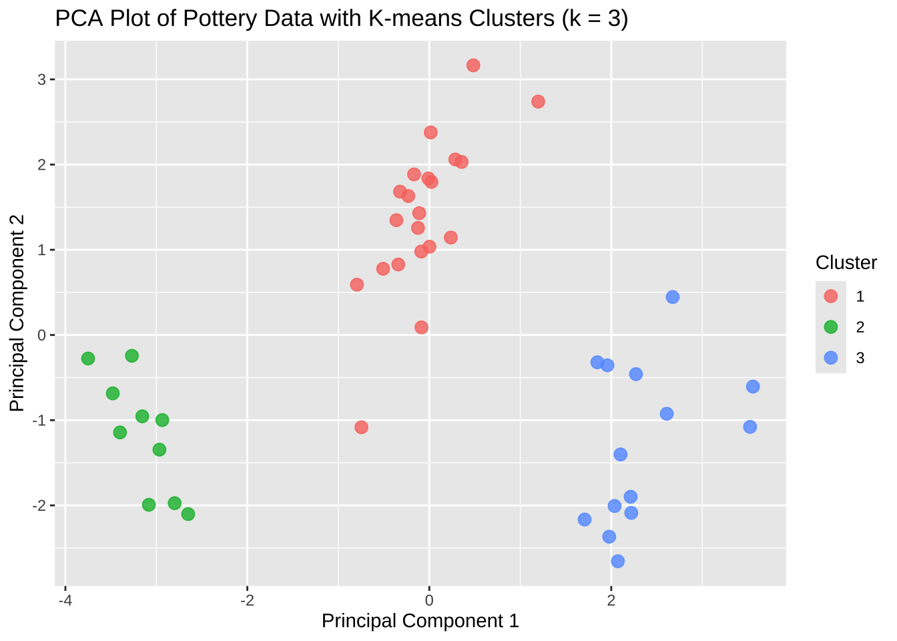